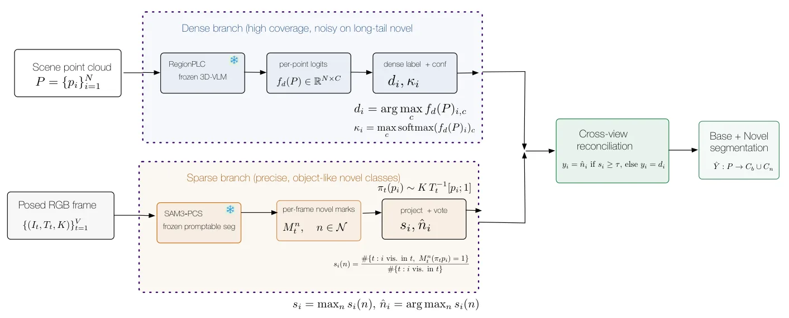
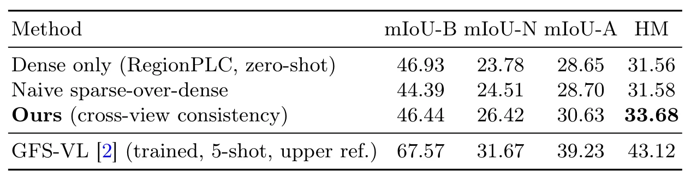

广义少样本基准上的零训练开放词汇三维点云分割Training-Free Open-Vocabulary 3D Point-Cloud Segmentation on the Generalized Few-Shot Benchmark
跨视图一致性对低监督语义地图很实用，ScanNet++ 增益明显；依赖准确相机位姿和冻结基础模型，在线成本及室外迁移仍不清楚。
一句话工作总结
利用有位姿多视图的一致投票协调冻结的 3D 视觉语言先验与提示分割器，实现无需训练和 support 的开放词汇点云分割。
摘要
本文研究在无需训练、3D 标签乃至少样本 support 的条件下进行开放词汇点云分割。方法组合冻结的 3D vision-language 模型 RegionPLC 与冻结的可提示概念分割器 SAM3：仅用新类别名称提示 SAM3，从有位姿 RGB 视图把结果提升到三维，再以跨视图一致性确认 novel point。在 ScanNet200 上 novel mIoU 比零训练稠密先验提高 2.6；在更难的 ScanNet++ 上，novel mIoU 从 16.2 提升到 31.9，harmonic mean 从 21.5 提升到 31.1。加入 few-shot support 并未带来收益。
Generalized few-shot 3D point-cloud segmentation (GFS-PCS) asks a model to segment a scene into many base classes seen at training time and a set of novel classes. The state of the art reaches novel classes by reconciling a dense but noisy 3D vision-language prior with the few-shot support, but it pays for this with base 3D labels, per-episode training, and the support annotations themselves. We ask how far the same reconciliation can go with none of these: no training, no 3D labels, and not even the few-shot support. We pair a frozen 3D vision-language model (RegionPLC) as a dense prior with a frozen promptable concept segmenter (SAM3), prompted by the bare novel class names and lifted from posed RGB views, and reconcile the two by cross-view consistency: a point becomes novel only when enough of the views that see it agree. On the ScanNet200 GFS-PCS benchmark this fully training-free, open-vocabulary pipeline improves novel mIoU by +2.6 over the training-free dense prior while holding base accuracy within 0.5, and recovers a third (33%) of the novel-class gap to the trained state of the art that uses far more supervision. We further show that injecting the few-shot support into the pipeline, as a fusion gate and as a prototypical dense classifier, adds nothing over consistency alone and in fact degrades it through the classifier, which is why the method needs no support at all. On the harder ScanNet++ benchmark, where the dense prior is far weaker on novel classes, the same pipeline nearly doubles novel mIoU (+15.7, from 16.2 to 31.9) at a 1.7 base cost, lifting the harmonic mean from 21.5 to 31.1
中文解读摘录
- 链接：arXiv 2607.15331
- 核心贡献：将冻结的 RegionPLC 稠密先验与由类别名称提示的 SAM3 分割从有位姿 RGB 视图提升到三维，再以跨视图一致性确认 novel class，无需训练、3D 标签或 few-shot support。
- 为什么重要：跨视图一致性是低监督语义地图的实用机制；在 ScanNet++ 上 novel mIoU 从 16.2 提升到 31.9，harmonic mean 从 21.5 提升到 31.1。
- 待核查：位姿误差与遮挡敏感性、SAM3 版本/可复现性、在线增量成本，以及室外和机器人自采数据的迁移。
图表/页面预览

{kind=link}

{kind=link}
